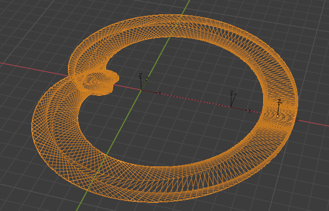

how_to_blender
* iteration for selected objects
* for obj in bpy.context.selected_objects:
obj.name=`new_name`
* animation trajectory
* https://github.com/jamad/blender_jamad/blob/master/animation_trajectory.blend
* 